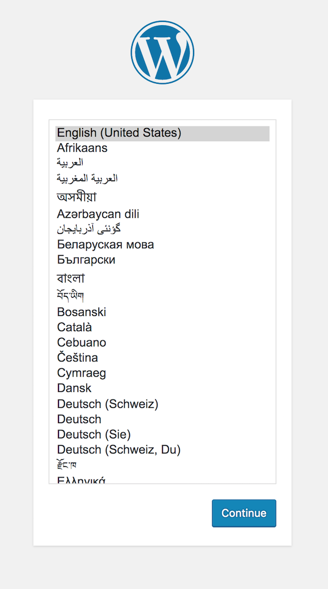

Selinux Policy และ webserver
ต่อเนื่องจากบทที่แล้ว เราได้ทราบว่า selinux จะมีการควบคุม selinux policy
# sestatus
SELinux status: enabled
SELinuxfs mount: /sys/fs/selinux
SELinux root directory: /etc/selinux
Loaded policy name: targeted
Current mode: permissive
Mode from config file: permissive
Policy MLS status: enabled
Policy deny_unknown status: allowed
Max kernel policy version: 28
# semanage fcontext -l
ตัวอย่าง โครงสร้างของ web ที่ต้องการสร้าง
mkdir -p /webapps/apps/app1/public_html/{wp-content,uploads}
mkdir -p /webapps/logs/app1
mkdir -p /webapps/cache/app1
/webapps
|---/apps
| |---/app1
| |---/public_html
| |---/wp-content
| |---/uploads
| |---/index.php
| |---/wp-config.php
|
|---/logs
| |---/app1
|
|---/cache
|---/app1
| /apps | This directory contains the web application directories, which host the application files. Each application will be segregated into its own child app directory. All files should be read-only, unless explicit permissions allow otherwise. |
|---|---|
| /logs | This directory will contain the log files for our applications. Each application will have its own child log directory. |
| cache | Contains the Apache cache directories for each application. |
# ls -Z /webapps/
drwxr-xr-x. root root unconfined_u:object_r:default_t:s0 apps
drwxr-xr-x. root root unconfined_u:object_r:default_t:s0 cache
drwxr-xr-x. root root unconfined_u:object_r:default_t:s0 logs
ใช้ option -Z เพื่อดู context จะเห็น
ค่าของ Contexts type ที่เกี่ยวข้องกับ apache
| httpd_sys_content_t | Read-only directories and files used by Apache |
|---|---|
| httpd_sys_rw_content_t | Readable and writable directories and files used by Apache. Assign this to directories where files can be created or modified by your application, or assign it to files directory to allow your application to modify them. |
| httpd_log_t | Used by Apache to generate and append to web application log files. |
| httpd_cache_t | Assign to a directory used by Apache for caching, if you are using mod_cache. |
กำหนด context type ให้แก่ directory
การกำหนด policy คือการกำหนด context type ให้แก่ Directory ตามโครงสร้างดังนี้
1 กำหนด httpd_sys_content_t context ให้แก่ /webapps directory
# semanage fcontext -a -t httpd_sys_content_t "/webapps(/.*)?"
2 กำหนด httpd_log_t context ให้แก่ logging directory
# semanage fcontext -a -t httpd_log_t "/webapps/logs(/.*)?"
3 กำหนด httpd_cache_t context
# semanage fcontext -a -t httpd_cache_t "/webapps/cache(/.*)?"
เพิ่มเติมสิทธิ การเขียนอ่าน Read Write Access ในกรณี ที่ต้องการ
| /uploads/ | Directory | Allow WordPress to upload files for blog entries, such as images, videos, audio, etc. |
|---|---|---|
| /wp-config.php | File | This file is modifed by WordPress when permalinks are enabled or changed. It needs to be writable, otherwise, changes to the file will have to be done manually. |
| /logs | Directory | Allow write logfile to directory |
4 กำหนด สิทธิ ให้แก่ /uploads
# semanage fcontext -a -t httpd_sys_rw_content_t "/webapps/apps/app1/public_html/uploads(/.*)?"
5 กำหนด สิทธิ ให้แก่ /wp-config.php
# semanage fcontext -a -t httpd_sys_rw_content_t "/webapps/apps/app1/public_html/wp-config.php"
6 กำหนดสิทธิ ให้แก่ logs
# semanage fcontext -a -t httpd_log_t "/webapps/logs/app1(/.*)?"
# semanage fcontext -l | grep webapps
/webapps(/.*)? all files system_u:object_r:httpd_sys_content_t:s0
/webapps/logs(/.*)? all files system_u:object_r:httpd_log_t:s0
/webapps/cache(/.*)? all files system_u:object_r:httpd_cache_t:s0
/webapps/apps/app1/public_html/uploads(/.*)? all files system_u:object_r:httpd_sys_rw_content_t:s0
/webapps/apps/app1/public_html/wp-config.php all files system_u:object_r:httpd_sys_rw_content_t:s0
/webapps/logs/app1(/.*)? all files system_u:object_r:httpd_sys_rw_content_t:s0
7 Apply SELinux Policy
# restorecon -Rv /webapps
8 Dowload wordpress version ล่าสุด
# yum install wget rsync
# cd /
# wget https://wordpress.org/latest.zip
# rsync -avp wordpress/* /webapps/apps/app1/public_html/
# cd /webapps/apps/app1/public_html/
# cp wp-config-sample.php wp-config.php
# chown -R apache:apache /webapps
# restorecon -Rv /webapps
9 สร้าง vhost
# cd /etc/httpd/conf.d/
# cp webserver-vhost.conf wordpress1-vhost.conf
# vi wordpress1-vhost.conf
<VirtualHost *:80>
ServerAdmin webmaster@example.com
ServerName wordpress1.example.com
ServerAlias wordpress1.example.com
DocumentRoot /webapps/apps/app1/public_html/
ErrorLog /webapps/logs/app1/error.log
CustomLog /webapps/logs/app1/access.log combined
<Directory "webapps/apps/app1/public_html">
Options Indexes MultiViews FollowSymLinks Includes ExecCGI
Require all granted
</Directory>
</VirtualHost>
10 Restart httpd
# systemctl restart httpd
11 เพิ่ม wordpress1.example.com wordpress1
192.168.33.100 wordpress1.example.com wordpress1
12 เพิ่ม browser ไปยัง
wordpress1.example.com/
